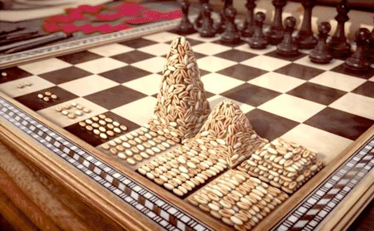
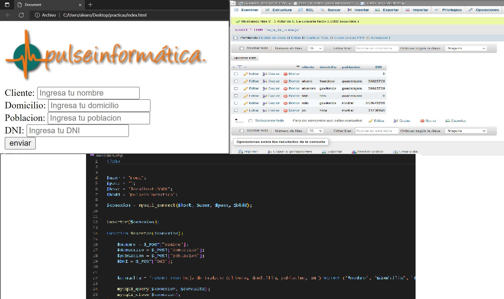

Este proyecto lo he llamado CRYPTOS y funciona mediante la automatización de la informacion que nos proporcionada una API, de tal manera que establecida una alerta, ésta nos avisará cuando el valor de nuestra moneda cambie. Por ejemplo, establecemos el aviso para la moneda Bitcoin y si su valor baja o sube, la aplicacion nos avisará de su nuevo valor actualizado.
Esto es interesante para aquellas personas que quieren estar informadas del precio de cualquier cryptomoneda en el instante en el que su valor cambia, ya sea para cambiar de inversion, aumentar la inversion o quitar el dinero invertido.
El proyecto que os presento está creado en lenguaje python y lo podeis encontrar en mi Github
https://github.com/munilla1/criptos/blob/main/criptos.py, en mi pestaña de contacto. La informacion que he adquirido de la API está en la pagina web de coinbase.
Mi segundo proyecto consiste en dibujar la desviacion de los disparos de un FPS [first-person shooter] sobre una grafica de ejes cartesianos, con esta desviación, debida al retorceso del arma, se consigue un mayor realismo en el videojuego.
Está creado en lenguaje Python y su estructura lo componen varias funciones de código
https://github.com/munilla1/videojuego/blob/main/videojuego.py

Este proyecto es un cálculo realizado en python. He conseguido hacer una aplicación que me calcule los granos de arroz en cada casilla del tablero de ajedrez. Ésta cantidad de granos se multiplican exponencialmente y el calculo nos da, mediante una tabla, cuántos granos hay en cada casilla, cuantos granos totales conseguimos, el peso total y el peso en cada casilla.
El codigo lo puedes encontrar en mi GitHub
https://github.com/munilla1/arroz2/blob/main/peso_por_grano%20%3D%200.02.py

Este es un proyecto realizado en una pagina web "virgen" en la cual vamos a obtener los datos que ingrese el usuario en nuestra BBDD mediante un formulario web. Para ello he creado una BBDD simple, no relacional y una pagina web y por medio de una pequeña aplicación he enlazado ésta pagina web con la BBDD para que los datos se me guarden y así poderlos tratar.
El codigo lo puedes encontrar en mi GitHub
https://github.com/munilla1/pulseinformatica